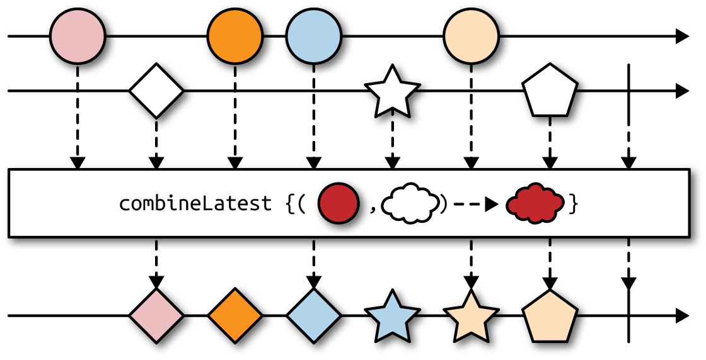
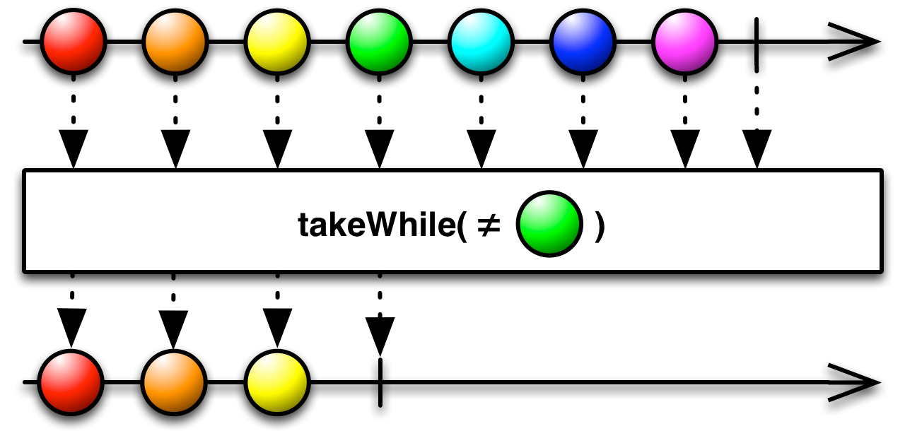

Operators
One of the reasons why RxJava is so powerful is the rich universe of built-in operators it provides and the possibility of creating custom ones. An operator is a function that takes upstream Observable<T> and returns downstream Observable<R>, where types T and R might or might not be the same. Operators allow composing simple transformations into complex processing graphs.
Operators are typically instance methods on Observable that somehow alter the behavior of upstream Observable as seen by downstream Observables or Subscribers.
In RxJava, you must forget about mutating data structures internally: modifying variables outside of stream is considered very nonidiomatic and dangerous. Every single operator returns a new Observable, leaving the original one untouched.
Every time you use any operator, including those that we did not explain yet, you basically create a wrapper around original Observable. This wrapper can intercept events flying through it but typically does not subscribe on its own.
This is an antipattern in RxJava, operators should be nonblocking, fast, and as pure as possible.
Marble Diagrams
A marble diagram illustrates how various operators work. Most of the time you will see two horizontal axes representing time flying by from left to right. Shapes on these diagrams (the aforementioned marbles) visualize events. Between the top and bottom axes there is an operator in question that somehow alters the sequence of events coming from the source Observable (upstream) to form the resulting Observable (downstream), as demonstrated in the following graphic:

Core Operators: Filtering

It is also a common practice to filter() the same Observable multiple times, each time with a different predicate. We can apply several filters on original Observable and even chain them (filter(p1).filter(p2).filter(p3)), effectively implementing logical conjunction (filter(p1 && p2 && p3)).
|
|
Core Operators: Mapping
Mappings are used to perform certain transformation on each event. This can be decoding from JSON to Java object (or vice versa), enriching, wrapping, extracting from the event, and so on.

|
|
Whatever you return from a function in map() is wrapped again inside an Observable.
By the way having mutable events (like java.util.Date) is problematic because any operator or Subscriber can unintentionally mutate events consumed by other Subscribers. We can quickly fix this by applying subsequent map():
|
|
doOnNext() is like a probe that you can safely inject anywhere in your pipeline of Observables to keep an eye on what is flowing through. doOnNext() allows looking at items going through without touching them. doOnNext() simply receives every event that flew from upstream Observable and passes it downstream, it cannot modify it in any way.
Technically, doOnNext() can mutate the event. However, having mutable events controlled by Observable is a recipe for a disaster.
Wrapping Up Using flatMap()
flatMap() first constructs Observable<Observable<R>> replacing all upstream values of type T with Observable<R> (just like map()). However, it does not stop there: it automatically subscribes to these inner Observable<R> streams to produce a single stream of type R, containing all values from all inner streams, as they come.

flatMap() is the most fundamental operator in RxJava, using it one can easily implement map() or filter():
|
|
In practice, we do not replace map() and filter() with flatMap() due to the clarity of code and performance.
As a rule of thumb, you use flatMap() for the following situations:
The result of transformation in
map()must be anObservable. For example, performing long-running, asynchronous operation on each element of the stream without blocking.You need a one-to-many transformation, a single event is expanded into multiple sub-events. For example, a stream of customers is translated into streams of their orders, for which each customer can have an arbitrary number of orders.
Now imagine that you would like to use a method returning an Iterable (like List or Set). For example, if Customer has a simple List<Order> getOrders(), you are forced to go through several operators to take advantage of it in Observable pipeline:
|
|
Or, equivalent and equally verbose:
|
|
The need to map from a single item to Iterable is so popular that an operator, flatMapIterable(), was created to perform just such a transformation:
|
|

If getOrders() was not a simple getter but an expensive operation in terms of run time, it is better to implement getOrders() to explicitly return Observable<Order>.
Another interesting variant of flatMap() can react not only to events, but on any notification, namely events, errors, and completion. The simplified signature of this flatMap() overload follows. For an Observable<T> we must provide the following:
- A function mapping single
T→Observable<R> - A function mapping an error notification →
Observable<R> - A no-arg function reacting on upstream completion that can return
Observable<R>
Here is what the code looks like:
|
|
Imagine that you are creating a service that uploads videos. It takes a UUID and returns upload progress with Observable<Long>:
|
|
|
|
the last lambda expression (() -> rate(id)) reacts upon stream completion. At this point, we replace completion notification with another Observable<Rating>. So, even if the original Observable wanted to terminate, we ignore that and in a way append a different Observable. Keep in mind that all three callbacks must return Observable<R> of the same type R.
Just to make sure you understand the syntactic part of flatMap(), another abstract example translates from a sequence of characters to Morse code:
|
|
As you can clearly see, every character is replaced by a sequence of DI and DAH sounds (dots and dashes). When character is unrecognizable, an empty sequence is returned. flatMap() ensures that we get a steady, flat stream of sounds, as opposed to Observable<Observable<Sound>>, which we would get with plain map(). At this point, we touch an important aspect of flatMap(): order of events. This is best explained with an example, which will be much more enjoyable with delay() operator.
For the time being, let’s study an example. We will need to produce a Cartesian product of all values from two streams. For example we might have two Observables, one with chessboard’s rows (ranks, 1 to 8) and one with columns (files, a to h). We would like to find all possible 64 squares on a chessboard:
|
|
The squares Observable will emit exactly 64 events: for 1 it generates a1, a2,…a8, followed by b1, b2, and so on until it finally reaches h7 and h8.
Order of Events After flatMap()
flatMap() cannot give any guarantee about what order of those subevents will arrive at the downstream operator/subscriber.
What flatMap() essentially does is take a master sequence (Observable) of values appearing over time (events) and replaces each of the events with an independent subsequence. These subsequences are generally unrelated to one another and to the event that generated them from master sequence. To make it clear, you no longer have a single the master sequence but a set of Observables, each working on its own, coming and going over time.
Take this simple code snippet as an example:
|
|
In this example, we delay event 10L by 10 seconds and event 1L (chronologically appearing later in upstream) by 1 second. As a result, we see 1 after a second and 10 nine seconds later—the order of events in upstream and downstream is different! Even worse, imagine a flatMap() transformation producing multiple events (even infinite number of them) over wide range of time:
|
|
The loadRecordsFor() method returns different streams depending on the day of the week:
|
|
The result is like this:
|
|
But not:
|
|
If you carefully track all delays, you will notice that this order is in fact correct. For example, even though Sunday was the first event in the upstream Observable, Mon-0 event appeared first because the substream produced by Monday begins emitting faster. This is also the reason why Mon-4 appears before Sun-3 and Sun-4.
You have two streams that work independently but their results must somehow merge into a single Observable.
When flatMap() encounters Sunday in the upstream, it immediately invokes loadRecordsFor(Sunday) and redirects all events emitted by the result of that function (Observable<String>) downstream. However, almost exactly at the same time, Monday appears and flatMap() calls loadRecordsFor(Monday). Events from the latter substream are also passed downstream, interleaving with events from first substream. flatMap() instead subscribes to all substreams immediately and merges them together, pushing events downstream whenever any of the inner streams emit anything. All subsequences returned from flatMap() are merged and treated equally.
Preserving Order Using concatMap()

There is a handy concatMap() operator that has the exact same syntax as flatMap() but works quite differently:
|
|
This time the output is exactly what we anticipated:
|
|
When the first event (Sunday) appears from upstream, concatMap() subscribes to an Observable returned from loadRecordsFor() and passes all events emitted from it downstream. When this inner stream completes, concatMap() waits for the next upstream event (Monday) and continues. concatMap() does not introduce any concurrency whatsoever but it preserves the order of upstream events, avoiding overlapping.
flatMap() uses the merge() operator internally that subscribes to all sub-Observables at the same time and does not make any distinction between them. That is why downstream events interleave with one another. concatMap(), on the other hand, could technically use the concat() operator. concat() subscribes only to the first underlying Observable and continues with the second one when the first one completes.
Controlling the concurrency of flatMap()
Suppose that you have a large list of users wrapped in an Observable. Each User has a loadProfile() method that returns an Observable<Profile> instance fetched using an HTTP request. Our aim is to load the profiles of all users as fast as possible.
|
|
If we have, say 10,000 Users, we suddenly triggered 10,000 concurrent HTTP connections.
flatMap() has a very simple overloaded version that limits the total number of concurrent subscriptions to inner streams:
|
|
he maxConcurrent parameter limits the number of ongoing inner Observables. In practice when flatMap() receives the first 10 Users it invokes loadProfile() for each of them. However, when the 11th User appears from upstream, flatMap() will not even call loadProfile(). Instead, it will wait for any ongoing inner streams to complete. Therefore, the maxConcurrent parameter limits the number of background tasks that are forked from flatMap().
You can probably see that concatMap(f) is semantically equivalent to flatMap(f, 1)—flatMap() with maxConcurrent equal to one. We could spend a couple of extra pages discussing the nuances of flatMap(), but more exciting operators lie ahead of us.
Postponing Events Using the delay() Operator
delay() basically takes an upstream Observable and shifts all events further in time. So, a construct as simple as:
|
|
will not emit x, y and z immediately upon subscription but after given delay.
We can replace delay() with timer() and (surprise!) flatMap() like this:
|
|
I hope this is clear: we generate an artificial event from timer() that we completely ignore. However, using flatMap() we replace that artificial event (zero, in i value) with three immediately emitted values: x, y, and z. This is somewhat equivalent to just(x, y, z).delay(1, SECONDS) in this particular case; however, it is not so in general.
Treating Several Observables as One Using merge()
The merge() operator is used extensively when you want to treat multiple sources of events of the same type as a single source. Also, if you have just two Observables you want to merge(), you can use obs1.mergeWith(obs2) instance method.

The order of Observables passed to merge() is rather arbitrary. No matter which one emits a value first, it will be forwarded to the Observer of all.
Keep in mind that errors appearing in any of the underlying Observables will be eagerly propagated to Observers. You can use the mergeDelayError() variant of merge() to postpone any errors until all of the other streams have finished. mergeDelayError() will even make sure to collect all exceptions, not only the first one, and encapsulate them in rx.exceptions.CompositeException.
|
|
Pairwise Composing Using zip() and zipWith()
Zipping is the act of taking two (or more) streams and combining them with each other in such a way that each element from one stream is paired with corresponding event from the other. A downstream event is produced by composing the first event from each, second event from each stream, and so on.
However if one of the streams outperforms the other even slightly, events from the faster Observable will need to wait longer and longer for the lagging stream.

zip() completes early if any of the upstream Observables complete, discarding other streams early.
The zip() and zipWith() operators are equivalent. We use the former when we want to fluently compose one stream with another, like so: s1.zipWith(s2, ...). Static zip() on Observable can take up to nine streams:
|
|
For example, think about the WeatherStation API that exposes temperature and wind measurements precisely every minute at the same time:
|
|
We have to make an assumption that events from these two Observables are emitted at the same time and thus with the same frequency. Under this restriction, we can safely join these two streams by combining every pair of events.
|
|
When a new Temperature event occurs, zipWith() waits (obviously without blocking!) for Wind, and vice versa. Two events are passed to our custom lambda and combined into a Weather object.
|
|
When streams are synchronized, this value oscillates around zero. However, if we slightly slow down one Observable, say green becomes Observable.interval(11, MILLISECONDS), the situation is much different. The time difference between red and green keeps going up: red is consumed in real time but it must wait, increasing the amount of time for the slower item. Over time this difference piles up and can lead to stale data or even memory leak.
When Streams Are Not Synchronized with One Another
combineLatest()

Take the following artificial example. One stream produces S0, S1, S2 values every 17 milliseconds whereas the other F0, F1, F2 every 10 milliseconds (considerably faster):
|
|
We combine these two streams and produce a new value every time any of the streams produces something. The output quickly becomes out-of-sync, but at least values are consumed in real time, and the faster stream does not need to wait for the slower one:
|
|
RxJava notices the new event on the fast stream so takes whatever the latest value was of the slow stream (it still has two wait for at least one event!)—S0 in this case—and produces a new pair. However, neither stream is distinguished: when the new slow S1 appears, the latest known fast value (F2) is taken and combined, as well. After about 10 seconds we encounter the F1000:S588 event. Everything adds up: during 10 seconds, fast stream produced about 1,000 events, whereas the slow stream only 588 (10 seconds divided by 17 milliseconds).
withLatestFrom()

It is similar to combineLatest, but only emits items when the single source Observable emits an item. Events from the second stream do not trigger a downstream event; they are used only when first stream emits.
|
|
The slow stream is primary, the resulting Observable will always emit an event when slow emits. Conversely, fast stream is just a helper used only when slow emits something.
|
|
All slow events appearing before the first fast event are silently dropped because there is nothing with which to combine them. This is by design, but if you truly need to preserve all events from the primary stream, you must ensure that the other stream emits some dummy event as soon as possible.
|
|
The output reveals that no slow events are dropped. However, in the beginning we see dummy "FX" events a few times, until the first "F0" shows up after 100 milliseconds:
|
|
startWith() basically returns a new Observable that, upon subscription, first emits some constant values (like "FX") followed by original Observable. For example, the following code block yields 0, 1 and 2, in that order:
|
|
amb()
amb() (together with ambWith()) waits for the very first item emitted. When one of the Observables emits the first event, amb() discards all other streams and just keep forwarding events from the first Observable that woke up.
|
|
You can write an equivalent program using nonstatic ambWith(), but it is less readable because it hides the symmetry of amb().
The slow stream produces events less frequently, but the first event appears after 100 milliseconds, whereas the fast stream begins after 200 milliseconds. What amb() does is first subscribe to both Observables, and when it encounters the first event in the slow stream, it immediately unsubscribes from the fast one and forwards events from only the slow one:
|
|
doOnSubscribe() and doOnUnsubscribe() callbacks are useful for debugging purposes. Notice how unsubscription from F occurs roughly 100 millisecond after subscription to S; this is the moment when first event from S Observable appeared. At this point, listening for events from F no longer makes any sense.
Scanning Through the Sequence with Scan and Reduce
scan() is like a bulldozer, going through the source (upstream) Observable and accumulating items.

scan() takes two parameters: the last generated value (known as the accumulator) and current value from upstream Observable. In the first iteration, total is simply the first item from progress, whereas in the second iteration it becomes the result of scan() from the previous one.
|
|
Overloaded version of scan() can provide an initial value (if it is different than simply the first element):
|
|
factorials will generate 1, 2, 6, 24, 120, 720…, and so forth.
scab care about intermediate results, but reduce just the final one.

reduce() is implemented using scan().takeLast(1).single().
Imagine that you have a source of CashTransfer objects with getAmount() method returning BigDecimal. We would like to calculate the total amount on all transfers.
The following two transformations are equivalent. They iterate over all transfers and add up amounts, beginning at ZERO:
|
|
The second one seems simpler, despite using two steps. This is another reason to prefer smaller, more composable transformations over a single big one.
Also you can probably see that reduce() is basically scan() talking only to the last element. As a matter of fact, you can implement it as follows:
|
|
Reduction with Mutable Accumulator: collect()
The collect operator is similar to reduce but is specialized for the purpose of collecting the whole set of items emitted by the source Observable into a single mutable data structure to be emitted by the resulting Observable.

|
|
It’s equivalent to:
|
|
Another useful use case for collect() is aggregating all events into a StringBuilder. In that case, the accumulator is an empty StringBuilder and an operation appends one item to that builder:
|
|
Transforming Observable<T> into Observable<List<T>> is so common that a built-in toList() operator exists.
Asserting Observable Has Exactly One Item Using single()
The single operator is similar to first, but throws a NoSuchElementException if the source Observable does not emit exactly one item before successfully completing.
Dropping Duplicates Using distinct() and distinctUntilChanged()
Suppress duplicate items emitted by an Observable. The Distinct operator filters an Observable by only allowing items through that have not already been emitted. distinct() is useful when we want to process unique events only once. Be sure to remember that distinct() must keep in mind all events/keys seen so far for eternity.
The comparison happens by means of equals() and hashCode(), so ensure that you implement them according to Java guidelines (two equal objects must have the same hash code).

|
|
In practice, distinctUntilChanged() is often more reasonable. In the case of distinctUntilChanged(), any given event is discarded only if the previous event was the same (by default using equals() for comparison). distinctUntilChanged() works best when we receive a steady stream of some measurements and we want to be notified only when the measured value actually changed.
We experimented with Observable<Weather>, with Weather having two attributes: Temperature and Wind. A new Weather event can appear once every minute, but the weather does not change that often, so we would like to drop duplicated events and focus only on changes:
|
|
Obviously, if we want to an emit event every time either Temperature or Wind changes, parameterless distinctUntilChanged() would work great, assuming that Weather implements equals().
The important difference between distinct() and distinctUntilChanged() is that the latter can produce duplicates but only if they were separated by a different value.
Also distinctUntilChanged() must only remember the last seen value, as opposed to distinct(), which must keep track of all unique values since the beginning of the stream. This means that distinctUntilChanged() has a predictable, constant memory footprint, as opposed to distinct().
You are building an API that will notify clients about every new item. Obviously, you can use java.nio.file.WatchService or database triggers, but take this as an educational example.
|
|
This simple pattern allows us to replace a bunch of Thread.sleep() invocations and manual caching with periodic polling. It is applicable in many areas, like File Transfer Protocol (FTP) polling, web scraping, and so on.
Slicing and Dicing Using skip(), takeWhile(), and Others
As a matter of fact, it is a common practice to slice Observable and consume just a small subset. Most operators in this section have examples unless they follow the principle of least astonishment.
take(n) and skip(n)
The take(n) operator will truncate the source Observable prematurely after emitting only the first n events from upstream, unsubscribing afterward (or complete earlier if upstream did not have n items). skip(n) is the exact opposite; it discards the first n elements and begins emitting events from the upstream Observable beginning with event n+1. Both operators are quite liberal: negative numbers are treated as zero, exceeding the Observable size is not treated as a bug:
|
|
takeLast(n) and skipLast(n)
takeLast(n) emits only the last n values from the stream before it completes. Internally, this operator must keep a buffer of the last n values and when it receives completion notification, it immediately emits the entire buffer. It makes no sense to call takeLast() on an infinite stream because it will never emit anything—the stream never ends, so there are no last events. skipLast(n), on the other hand, emits all values from upstream Observable except the last n. Internally, skipLast() can emit the first value from upstream only when it received n+1 elements, second when it received n+2, and so on.
|
|
first() and last()
The parameterless first() and last() operators can be implement via take(1).single() and takeLast(1).single() accordingly, which should pretty much describe their behavior. The extra single() operator ensures that the downstream Observable emits precisely one value or exception. Additionally, both first() and last() have overloaded versions that take predicates. Rather than returning the very first/last value they emit first/last value, matching a given condition.
takeFirst(predicate)
The takeFirst(predicate) operator can be expressed by filter(predicate).take(1). The only difference between this one and first(predicate) is that it will not break with NoSuchElementException in case of missing matching values.
takeUntil(predicate) and takeWhile(predicate)
takeUntil() emits values from the source Observable but completes and unsubscribes after emitting the very first value matching predicate.

takeWhile(), conversely, emits values as long as they match a given predicate.

So the only difference is that takeUntil() will emit the first nonmatching value, whereas takeWhile() will not. These operators are quite important because they provide a means of conditionally unsubscribing from an Observable based on the events being emitted. Otherwise, the operator would need to somehow interact with the Subscription instance, which is not available when the operator is invoked.
|
|
elementAt(n)
Extracting a specific item by index is rather uncommon, but you can use the built-in elementAt(n) operator for that. It is quite strict, and it can result in an IndexOutOfBoundsException being emitted when upstream Observable is not long enough or the index is negative. Of course, it returns Observable<T> of the same type T as upstream.

…OrDefault() operators
Many operators in this section are strict and can result in exceptions being thrown—for example, first() when upstream Observable is empty. Under these circumstances many ...OrDefault operators were introduced to replace exceptions with a default value. All of them are rather self-explanatory: elementAtOrDefault(), firstOrDefault(), lastOrDefault(), and singleOrDefault().
count()
count() is an interesting operator that calculates how many events were emitted by upstream Observable. By the way, if you need to know how many items matching a given predicate that the upstream Observable emitted, filter(predicate).count() can do that idiomatically. Do not worry, all operators are lazy so this will work even for quite large streams. Obviously, count() never emits any value in case of infinite stream. You can implementcount() easily by using reduce() ):
|
|
all(predicate), exists(predicate), and contains(value)
Sometimes, it is useful to ensure that all events from a given Observable match some predicate. The all(predicate) operator will emit true when upstream completes and all values matched the predicate. However, false will be emitted as soon as first nonconforming value is found. exists(predicate) is the exact opposite of all(); it emits true when the first matching value is found but false in case of upstream completing without any matching value found. Often, our predicate in exists() simply compares upstream values with some constants. In that case, you can use the contains() operator:
|
|
Ways of Combining Streams: concat(), merge(), and switchOnNext()
Consider a group of people, each one having microphone. Every microphone is modeled as an Observable<String>, for which an event represents a single word. Obviously, events appear over time, as soon as they are spoken. To simulate this behavior we will construct a simple Observable for demonstration purposes, interesting on its own:
|
|
Suppose that three people were quoting Hamlet by William Shakespeare:
|
|
We can finally see how concat(), merge(), and switchOnNext() differ.
concat
concat() (and instance method concatWith()) allow joining together two Observables: when the first one completes, concat() subscribes to the second one. Importantly, concat() will subscribe to the second Observable if, and only if, the first one is completed.

concat() is providing fallback value when first stream did not emit anything:
|
|
Observables are lazy, so neither loadFromCache() nor loadFromDb() actually load any data yet. loadFromCache() can complete without emitting any events when cache is empty, but loadFromDb() always emits one Car. concat() followed by first() will initially subscribe to fromCache and if that emits one item, concat() will not subscribe to fromDb. However, if fromCache is empty, concat() will continue with fromDb, subscribe to it, and load data from database.
concat() is nonblocking, it emits events only when the underlying stream emits something.
merge
merge() subscribes to words of each person immediately and forwards them downstream, no matter which person is speaking. If two streams emit an event at more or less the same time, they are both forwarded right away. There is no buffering or halting events within this operator.

|
|
The output is very chaotic:
|
|
replace merge with concat() operator:
|
|
switchOnNext

switchOnNext() begins by subscribing to an outer Observable<Observable<T>>, which emits inner Observable<T>s. As soon as the first inner Observable<T> appears, this operator subscribes to it and begins pushing events of type T downstream. Now what happens if next inner Observable<T> appears? switchOnNext() discards the first Observable<T> by unsubscribing from it and switches to the next one (thus, the name). In other words, when we have a stream of streams, switchOnNext() always forwards downstream events from the last inner stream, even if older streams keep forwarding fresh events.
This is how it looks in our Hamlet quoting example:
|
|
One of the possible outcomes, due to the random nature of this example, could look like this:
|
|
To illustrate how switchOnNext() works, we shall delay the emission of inner Observables. We are not delaying each word within that Observable (variant A) but the entire Observable (variant B is subtly different):
|
|
In variant A, the Observable appears immediately in the outer stream but begins emitting events with some delay. In variant B, on the other hand, we shift the entire Observable event forward in time so that it appears in the outer Observable much later.
Both static concat() and merge() operators can work with either a fixed list of Observables or Observable of Observables. In the case of switchOnNext(), the ladder makes sense.
In the case of delaying only events in every inner Observable (variant A) three inner Observables would appear at the same time in outer Observable, and switchOnNext() would only subscribe to one of them.
Buffer
Periodically gather items emitted by an Observable into bundles and emit these bundles rather than emitting the items one at a time.

Criteria-Based Splitting of Stream Using groupBy()
Divide an Observable into a set of Observables that each emit a different subset of items from the original Observable.

|
|
Whenever a new UUID is discovered, the new GroupedObservable<UUID, ReservationEvent> is emitted, pushing events related to that UUID. So it becomes clear that the outer data structure must be an Observable.
GroupedObservable is a simple subclass of Observable that apart from the standard Observable contract returns a key to which all events in that stream belong (UUID, in our case). The number of emitted GroupedObservables can be anything from one (in case of all events having the same key) to the total number of events (if each upstream event has a unique key).
When we subscribe to the outer Observable, every emitted value is actually another Observable (GroupedObservable) to which you can subscribe.
Of course, the preceding tips only apply to blocking Observables, which are rarely seen in real applications. If your underlying Observables are already asynchronous, achieving concurrency is a matter of understanding how they are combined and when subscription occurs. For example, merge() on two streams will subscribe to both of them concurrently, whereas the concat() operator waits until the first stream finishes before it subscribes to the second one.
Taking Periodic Samples and Throttling
The sample() operator looks at the upstream Observable periodically (for example, every second) and emits the last encountered event. If there were no event at all in the last one-second period, no sample is forwarded downstream and the next sample will be taken after one second, as illustrated in this sample:
|
|
The preceding code snippet will print something similar to the following:
|
|
Imagine that you have a list of names that appear with some absolute delays, like so:
|
|
After the first second, we println Linda, followed by Barbara a second later. Two seconds after Barbara was emitted, we see Susan. sample() will forward completion (and errors, as well) discarding the last period.
If we want to see Dorothy appearing as well, we can artificially postpone the completion notification, as is done here:
|
|
sample() has a more advanced variant taking Observable as an argument rather than a fixed period. This second Observable (known as sampler) basically dictates when to take a sample from the upstream source: every time sampler emits any value, a new sample is taken (if any new value appeared since the last sample). You can use this overloaded version of sample() to dynamically change the sampling rate or take samples only at very specific points in time. For example, taking a snapshot of some value when a new frame is redrawn or when a key is pressed. A trivial example can simply emulate the fixed period by using the interval() operator:
|
|
sample() has an alias in RxJava called throttleLast(). Symmetrically, there is also the throttleFirst() ) operator that emits the very first event that appeared in each period. So, applying throttleFirst() instead of sample() in our name stream yields rather expected results:
|
|
The output looks like this:
|
|
Buffering Events to a List
The buffer() operator aggregates batches of events in real time into a List. However, unlike the toList() operator, buffer() emits several lists grouping some number of subsequent events as opposed to just one containing all events (like toList()). The simplest form of buffer() groups values from upstream Observable into a lists of equal size:
|
|
The output shows three events emitted from the buffer(3) operator:
|
|
By using the buffer(int) operator you can replace several fine-grained events with less but bigger batches. For example, if you want to reduce database load, you might want to replace storing each event individually by storing them in batches:
|
|
You can use flatMap() or flatMapIterable() to get back a simple Observable<Integer>:
|
|
flatMapIterable() expects a function that transforms each value in the stream (one-element List<Integer>) into a List. Identity transformation (list -> list) is enough here.
Buffering by time periods
An overloaded version of buffer() that accepts time period (one second in the preceding example) aggregates all upstream events within that period.
Therefore, buffer() collects all events that happened during first time period, second time period, and so on.
|
|
Output:
|
|
TODO ch06 for more.
Moving window
Window is similar to Buffer, but rather than emitting packets of items from the source Observable, it emits Observables, each one of which emits a subset of items from the source Observable and then terminates with an onCompleted notification.

|
|
We batch all events from Observable<KeyEvent> that occurred in each second into Observable<List<KeyEvent>>. In the next step, we map List into its size. This is quite wasteful, especially if the number of events in each second is significant:
|
|
window(), as opposed to buffer(), returns an Observable<Observable<KeyEvent>>. The count() operator transforms an Observable<T> into an Observable<Integer> that emits just one item representing the number of events in the original Observable.
Skipping Stale Events by Using debounce()
buffer() and window() group several events together so that you can process them in batches. sample() picks one fairly arbitrary event once in a while. These operators do not take into account how much time elapsed between events.
debounce() (alias: throttleWithTimeout()) discards all of the events that are shortly followed by another event.
|
|
If the price goes above $150, we would like to forward such an update downstream much faster without hesitation:
|
|
If you still struggle to understand how debounce() works, here is a stock price simulator you can try:
|
|

![微信分享二维码]()